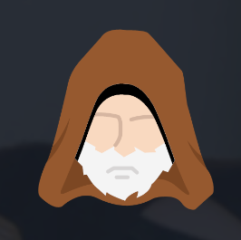

Kenobi
Walkthrough on exploiting a Linux machine. Enumerate Samba for shares, manipulate a vulnerable version of proftpd and escalate your privileges with path variable manipulation.

Web Exploitation A Christmas Crisis
This room covers cookies, How they are created and how to exploit them. It also shines a light on the background processes that make up the internet. Such as DNS and HTTP.

Kenobi
This room covers the basics of infiltrating a website and launching a reverse shell. It explains the steps involved in this process.